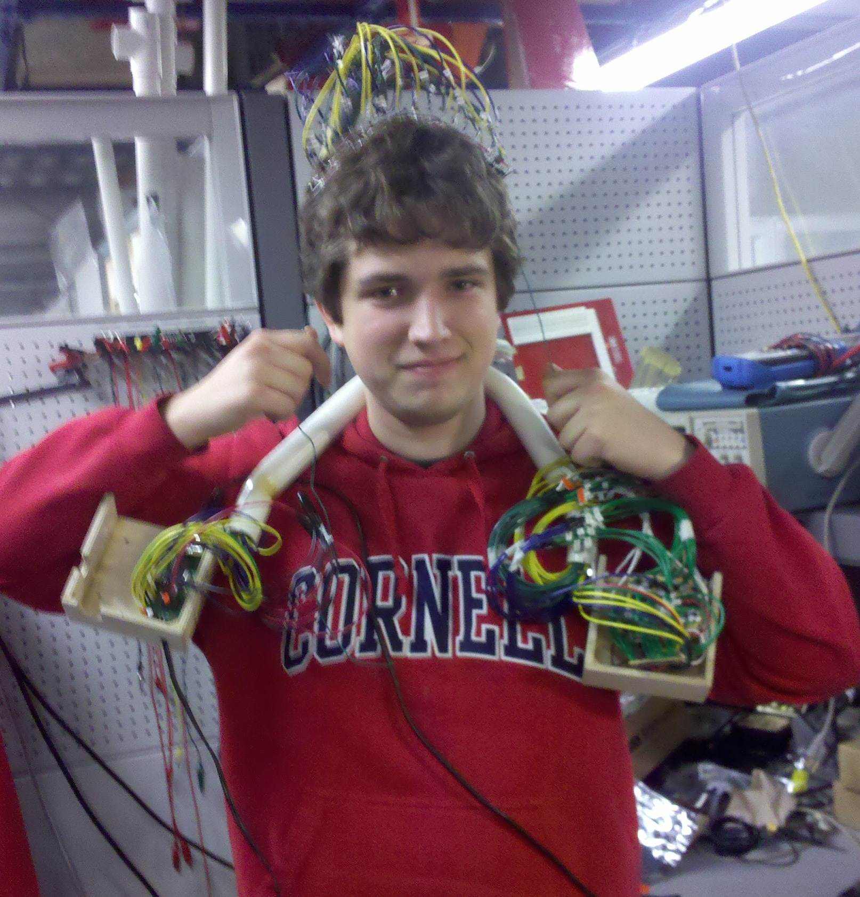

Introduction
Our project records and extracts event-related features from a 36-point relative blood-oxygen concentration sensor array from the surface of the brain.
We chose this project because of a combined interest in brain-computer interfaces. In an attempt to balance cost, complexity, and sensor density, we decided to implement a NIRS-inspired system. After collecting data from the array, the results were sent to a computer and displayed in a Java GUI.
High Level Design
Rationale and Sources
Several popular methods of measuring brain activity are electroencephalography (EEG), magnetic resonance imaging (MRI), positron emission topography (PET), computed axial tomography (CAT), magnetoencephalography, and near-infrared spectroscopy (NIRS). Of these methods, only EEG and NIRS are within any measure of feasibility given our time and budget for this project. MRI uses a powerful magnetic field, PET uses radiations from a nuclear tracer, CAT uses X-rays, and MEG uses unobtainable superconducting magnetometers. EEG is based on picking up electric fields resulting from the electric pulses of the underlying neurons. NIRS, on the other hand, works by shining infrared light into the scalp and measuring the amount of reflected light with a series of phototransistors. Since blood reflects infrared light depending on its level of oxygen concentration and activity within a region of the brain corresponds to increased blood flow to that area, the reflected infrared lights is a measure of local brain activity. The EEG is able provide a lot of information with high temporal resolution at the price of less-trivial sensor implementation than NIRS. Without amplification potentials measured at the scalp are on the order of microvolts whereas initial NIRS signals can be as high as the 10 mV range. Since we want high sensor density, the lower cost and easier implementation of an NIRS system are very desirable.
We used Shirley M Coyle's 2007 paper on a brain-computer interface using NIRS to help provide a proof of concept and reference for our system. Initially we prototyped with phototransistors/LEDs that are slightly beyond the upper window for NIRS (940nm vs 900nm), but we continued to use the 940nm pair after seeing data very similar to that in Coyle's work.
Normally, the goal of NIRS (when applied to a human subject) is to produce an absolute measure of oxygen concentration. Since blood has different absorption curves for infrared and red light (as shown to the right), the ratio of reflected red and infrared light can be used along with said curves to yield an absolute concentration. However, since we are only interested in the relative change in blood oxygen concentration, a single infrared light source is sufficient.
Logical Structure
The system is broken into five stages: sensor array, filter/amplify, ADC, on-chip processing, and reporting.
Hardware Structure
The 36 sensors are arranged in a 2-by-18 grid on a flexible wire mesh. Each sensor consists of a single infrared LED and phototransistor. The array is able to conform to an individual’s head with minimal effort. The wires connecting the array to the rest of the system effectively hold the array at approximately head-height due to their memory. To bring the array in closer contact with the head, a wire is pulled from both sides of the head. Once the array has reached an acceptable location, the wire can be twisted and the array will remain in its current location.
Since the signal from the phototransistor is 10-20mV peak-to-peak with a DC bias of about 4V, it is sent to a filter/amplifier boards. These boards consist of a common-emitter pre-amplifier, re-biasing stage (to 2.5V) and an active non-inverting AC amplifier. This allowed the system to have a much larger dynamic range without sacrificing the low-frequency information we are interested in. The signal is then sampled by an ADC and sent to the microcontroller over SPI. The microcontroller can selectively turn a sensor’s LED on or off so that adjacent sensors do not interfere with each other.
Software Structure
The microcontroller simultaneously samples from each of 36 sensors, processes the data, and transmits the results to a laptop running a Java GUI for display.
The sensor array was arranged so that multiple phototransistors would be able to receive light from multiple LEDs. However, in an attempt to minimize the non-ideal variations between sensors, the microcontroller turns on LEDs such that a phototransistor is only activated by its own LED (however, the user can selectively turn off sensors from the Java GUI). Consequently, this means that the microcontroller skips over ADC channels if they correspond to a sensor that has its LED turned off. After sampling, the results are displayed in a Java GUI in three ways: a plot of raw time-domain data, a false-color representation of average relative oxygen concentration, and a likelihood graph of possible trends in the data.
Hardware/Software Tradeoffs
Much of the analysis between a hardware and software tradeoff was done during construction of the system. Even though we had a large amount of time between samples (about 18 ms) we wanted a the software system to be as efficient as possible in anticipation of extra signal processing. Shortly into our physical build, however, we made the decision to trade code efficiency with lower soldering difficulty/time.
One example of such a tradeoff was with the inputs to the ADC chips. Initially three of the ADCs would receive 11 of their sensor grouping (0, 1, or 2, as discussed below in hardware design). The fourth ADC would only then need to take in three inputs, one from each sensor group. This approach had rather simple software behind it since the microcontroller read from ever ADC port of the first three ADCs. After physically arranging the ADC and amplifier boards, it became apparent that the uneven distribution of ADC inputs would create a dense region of wires. To avoid this, the inputs were balanced and each ADC took in nine inputs. The resulting product had a more uniform distribution of wires.
Standards
Our system has no relevant interface standards. We specified our own custom serial packet for efficient communication between the microcontroller and the Java GUI.
Intellectual Property
We were unable to find many patents relevant to our project. One patent we did find was US 2011/0105909 A1. It describes a form of a brain-computer control interface using near-infrared light to measure eye response to different images. This is sufficiently different from our project.Hardware Design
Our project has three large hardware components: the sensor array, the amplifier boards, and the shoulder-mounting unit.Sensor Array
Electrical
The sensor array consists of 36 pairs of infrared LEDs and phototransistors. The LEDs are powered by the LED driver chips located just behind the array. The drivers provide a constant current sink for all channels with the maximum current set by a single resistor (per chip). The formula is the following \[I_{max} = \frac{V_{ref}}{R_{ref}} \times 31.5\] where \(V_{ref}\) is 1.24 V. Each LED driver also has the ability to adjust the current flowing into each port independently through a method called dot correction. The chip provides 64 steps of the current ranging from 0% to 100% of the maximum current as specified by the above equation. Dot correction allows the system to selectively turn a given sensor’s LED on or off. All LEDs of a particular LED driver could be turned off at once by pulling the BLANK pin low. This method was used to quickly prepare the array for sampling. The LED drivers are actually meant to drive the LEDs with a PWM, but this was not desired for this system. To trick the chip into keeping the LEDs on, the PWM period values were written to their maximum and the PWM input to the chip was pulsed once after initially writing to the LED driver. This way, the LED driver would turn on the desired LEDs and keep them on until the microcontroller sent a command telling it otherwise (through either the BLANK pin or reprogramming the dot correction values).
Mechanical
The first plan for the sensor array was to cut up solder boards into small pieces since their grid of pads would allow for near-constant spacing between a given sensor’s LED and phototransistor. However, after gathering together the LEDs and phototransistors, it became immediately apparent that this method would be excessively expensive for 36 sensors. The second plan involved an old printed circuit board we found. It was large enough to produce many small supports for the sensors, but we determined it would be unnecessarily difficult to machine. Additionally, the board had two internal ground planes, which could potentially lead to shorts between the sensor elements. The third and final plan was to use a piece of extruded PVC as the base of the sensors. Holes were drilled into the extruded PVC using a solder board as a guide. This provided the benefit of near-constant pin pitch while being cheap and easy to construct.
After drilling the holes in the extruded PVC, the eventual shape of the sensor was marked with a razor blade and cut out with a hacksaw. The first few units were cut out roughly at first with the intention of filing down the edges later. However, the intermediate pieces were so small it was very difficult to precisely change their size. This problem was fixed by cutting the extruded PVC once as close as possible. Now that the sensor mounts are done, the electrical components had to be mounted. Using two mechanical ‘helping-hands,’ the sensor mount was restrained while the LED and phototransistor were secured using a hot glue gun. The emitter leads of the phototransistors and the positive leads of the LEDs were bent so they could connect to the wire mesh. In the end, the power for the LEDs was not bent as far down as the phototransistors because of a higher risk of shorts. This resulted in a ground mesh running both horizontally and vertically and a single power line running just horizontally. Attaching the sensors to the wire mesh used two ‘helping hands’ along with a piece of foam. The foam allowed for half of the array to remain relatively fixed while adding new sensors. It is very important that the emitter leads of the phototransistors bend in alternating direction so that two leads do not meet near each other. This causes a subtle problem when trying to adjust any element of the array. When you try to heat up one solder joint, there is a very good chance the wire will heat up enough to melt the adjacent joint as well. With this in mind, it is better to spread the joints out to avoid this problem. If the mesh wires are not as close to the sensor base (i.e. the extruded PVC) as possible, then the array will have an inferior bend radius. Without a good bend radius, the array will have a hard time adjusting to different sized heads.
Amplifier boards
The amplifier boards consisted of a pre-amplifier, re-biasing, and ac-gain stage. The pre-amplifier stage was needed to help buffer the sensor input as well as to reduce the amount of AC-gain needed in the final state. Having such a large gain in one stage resulted in component values that were either too expensive or infeasible to make fit in such a close space. An emitter degeneration resistor was added to the common-emitter state to reduce the amount of variation between outputs of sensors due to individual device variations of the transistors.
The capacitor, C1, before the common-emitter stage removes the DC bias from the signal in order to maximize gain without railing. C2 removes the DC bias from the output of the common-emitter stage and the voltage divider formed by R6 and R6 re-bias the signal at approximately 2.5V. Together, this keeps the signal as close to the middle of the dynamic range (0-5V) as possible.
Finally, the AC-gain stage provides the amplification necessary to take up the majority of the ADC’s dynamic range. It functions as a standard non-inverting amplifier with the exception of a capacitor to ground in the feedback loop. This blocks the DC portion of the signal from being amplified since impedance for the capacitor is \(\frac{1}{j\omega C}\).
Mounting System
Due to the large number of wire interconnects in the system, we needed a mounting system that would provide support as well as manage the wires. We initially considered a simple frame between the two shoulders with one box on each shoulder. It was pointed out that we could manage the wires better by using PVC tubing as the frame. We discussed our ideas with Kevin Fuhr (friend and fellow member of CUAUV) and learned that PVC could in fact be bent (up to 90 degrees in some cases) by first heating it. We took a heat gun and were able to bend the PVC to the desired horseshoe-like shape. From here we cut half a cylinder out of the two ends of the PVC and bent them flat. This allowed us to fit two screws from the frame to the wooden boxes containing the circuit boards.
To make the wiring easier, we spread the circuit boards out so that we could keep the most numerous connections short (i.e. place the LED drivers next to the sensor array so we don’t have to route 36 more wires through the PVC frame). The top of the frame had a 1”x2” slot cut out by a Dremel tool.
Software Design
The software we used for this project has two major components; The embedded ATMega C code, and the PC-side data display code.
ATMega Code
The main function of the ATMega-side code is to manipulate the ADCs and LED drivers to correctly sample the outputs of the analog amplifiers, and then to process the data and send it to the PC software to be displayed.
On startup, the ATMega first initializes the various peripherals needed to accomplish these goals, including the UART0, TIMER 1 (used to generate sampling interval), and SPI (used to communicate with ADCs) internal ATMega modules. In order to get samples from all four ADCs in a time-consistent manner (i.e., in order to maintain a known sampling frequency), all of the sampling is done in the TIMER 1 compare match interrupt, which is triggered every 20 ms. All of the processing on the acquired data is done in the main while(1) loop, as this processing does not have strict timing requirements.
Because of the physical arrangement of the LEDs and phototransistors in the sensor array, turning on all of the LEDs at once results in interference between adjacent sensors. Thus, during the sampling operation, we wanted to only have turned on a third of the LEDs, such that any interference would be minimized. To do this, in the TIMER 1 ISR in which sampling takes place, we enable the all of the outputs of only one of the three LED drivers at any given time. Then, we get samples from the ADC channels corresponding to the sensor pairs for the active LEDs. By doing this for all three LED drivers in a consistent way, we are able to ensure that the sampling period for any given channel is exactly 20 ms, even though the sampling operations for different channels are technically sequential.
Once the while(1) loop is notified of new sample data through a set of global variables, the measured data is sent using the UART module to the PC.
The UART module is also used to parse and implement a set of commands which can be set over the UART. These include a 'heartbeat' command (used to ensure that serial communication is working), a 'NOP' command (Used to test PC-side transmit functionality), and can be easily expanded to implement other commands.
Display Software
To have full control over how we displayed the sampled data, we decided to implement our own data display and system control application in Java. This proved to be quite useful throughout the development of the system.
From this software, we can send the aforementioned commands to the ATMega, control whether or not data should be sent over the UART, store all incoming data to a text file, and display the sampled data in a variety of ways.
The first way we implemented a data display was to simply show the raw ADC samples as unsigned integers, which range from 0 to 255. Then, using our own plotting library, we added functionality for plotting the sample values for each channel over time. With this functionality, we were able to verify that we were indeed acquiring data that represented blood oxygen content (by observing a heartbeat on top much lower frequency modulations, as described by Coyle.
The plotting functionality was implemented so that multiple channels could be graphed on the same plot, for ease of comparison between different channels.
Additionally, we added a false-color image display, which shows the spacial relationships between the sensor values in real-time.
To implement a serial connection with the ATMega, we used the open source Java Simple Serial Connector (jSSC) library. On top of the primitives provided by this library, we used a thread dedicated to parsing incoming data and placing it appropriately in data buffers.

Results
The system was successfully constructed and tested. Even though four out of the 36 sensor channels were not functioning to their full potential. We believe one of the defects was caused by a blown up op-amp within the quad op-amp. However, given the dense layout on the amplifier boards, we were unable to simply re-solder the entire op-amp chip for a single sensor.
Since our system should be sensitive to imagined motor actions as well as actual motor actions, we tested the system while sitting down. Team member A wore the system and relaxed while the team member B watched the data on a laptop. After the waveforms seemed to be relatively constant, team member A was told to imagine kicking a ball with their right foot. Team member A would maintain this imagery for 10-20 seconds at which time the test is over.
We carried out the above test twice and observed what appeared to be unique activity on a specific channel. The first test showed a local maximum of intensity while the second test showed a local minimum of intensity. Unfortunately, we ran out of time to conduct additional tests.
Safety was maintained by thoroughly testing the system on the bench before trying to wear it. Before the PVC frame was finalized, there were quite a few loose wires that could easily be caught in various items. When possible we used masking or electrical tape to bundle wires into small groups. This made them much more manageable when routing them through the PVC frame and in general kept the workspace clean. Since we were often both working on the system at the same time, we made sure to watch out for each other with regard to sleep deprivation. It’s too easy to keep working past the point when productivity is exchanged for unproductive, unsafe work. One point in particular is handling soldering irons. To help address this issue, we started work early and took breaks.
Our system produces no noticeable interference since we are using an isolating power supply and lack any fans or other noisy elements.
We designed the system so that it could be used by as many types of people as possible. While prototyping we tried getting sensor data from individuals with different hair types. When we were planning the PVC frame, we arrived at the final design in part because there would be less variation between individuals than if we were to place the wooden boxes directly on the shoulders.
Conclusions
Our system fully met our goal of providing a relatively low-cost, high-density sensor array. It is robust in that the user is able to selectively disable sensors that are broken or unnecessary to save power and time. Initial testing showed varying degrees of correlation between sensor channels. With this system, it should be possible to quickly characterize certain thought patterns over a large spatial extent.
If we were to continue this project, there are several things we would want to alter. The first change would be to order more spare parts. Because this system has such a large hardware build, losing parts is inevitable. Luckily we did not run into much trouble in this area, but it’s far better to be prepared in case we would have. On the note of components, we used surface mount parts exclusive for resistors and capacitors. This was done to save space and money. However, in the end, we had enough space and money left over but did not realize how difficult soldering that number of components would be. Using sockets for our ICs would have prevented the issue we encountered where a partly broken chip is nearly impossible to remove. Finally, given enough time and money, we would definitely implement the system with a printed circuit board and more specialized interconnects such as ribbon cables. This would cut down on the production time and potentially cost since if we ended up using a non-trivial amount of wires.
Intellectual Property Considerations
In our project, we used the Java Simple Serial Connector library to implement UART communication. This library is licensed under the GNU Lesser General Public License. We have also released the entirety of our source code under the GNU GPL v3. A copy of the full license is provided in our source code repository.
We did not reverse-engineer a design for this system. This system came about from what is known about the physical interactions between blood and certain wavelengths. While we did obtain numerous samples for prototyping and final construction of the system, we did not have to sign a non-disclosure agreement for them. We believe there may be patent opportunities for our project since most of the systems we came across used much more sophisticated (and expensive) lasers, data converters, and filters. We feel our project has great publishing opportunities since it allows for a large amount of data collection across a wide spatial range of the human cortex.
Applicable Standards
Our system had no standards to conform to since it is meant to be a flexible platform from which another system could be based on.
Ethical Considerations
Throughout the entire process of developing our project, we strived to maintain the highest degree of ethical integrity, as dictated by the IEEE code of ethics. . We kept safety for ourselves and for others in mind at all times, by especially trying to minimize as much as possible any hazards related to our hardware (like exposed wires, sharp edges, and the temperature of the LED driver ICs). Before any testing was performed with any of the sub-systems connected to our test sensor (which we placed on our heads), we made sure that it was operating safely.
While constructing our project, we took appropriate precautions while dealing with potentially hazardous tools like soldering irons, drills, and Dremel tools, like wearing safety glasses and ensuring the materials being worked on were securely held in place.
While designing the mechanical parts of our system, we worked to ensure that our system would be able fit as many different kinds of people as possible.
We have attempted to give due credit to all those helped in the construction and design elements of our project, and we are releasing the entirety of the source code for our project under the GNU GPL with the hopes that it might be of use to anyone else attempting to construct a similar system.
Legal Considerations
Our project does not use or produce wireless communication so we are not in violation of any FCC legal regulations. Our system is not intended for medical use. Therefore, we are not in violation of any medical device regulations.
Appendix
Comment Code Listing
Our fully commented code for both the ATMega and the Java GUI are in our google code repository, and are provided as free software under the terms of the GNU GPL v3.Full Schematic

Cost Details
| Part | Source | Unit Price | Quantity | Total Price |
| ATMega 644 | ECE 4760 Lab | 6.00 | 1 | $6.00 |
| ATMega 644 Custom PCB | ECE 4760 Lab | 4.00 | 1 | $4.00 |
| 4.7 kOhm Resistor | Digkey (311-47KARCT-ND) | 0.017 | 40 | $0.68 |
| 1 MOhm Resistor | Digikey (311-1.0MARCT-ND) | 0.017 | 40 | $0.68 |
| 3.65 kOhm Resistor | Digikey (311-3.65KCRCT-ND) | 0.019 | 40 | $0.76 |
| 200 Ohm Resistor | Digikey (311-200ARCT-ND) | 0.017 | 40 | $0.68 |
| 300 kOhm Resistor | Digikey (311-300KARCT-ND) | 0.0077 | 110 | $0.85 |
| 100 kOhm Resistor | Digikey (311-100KARCT-ND) | 0.017 | 40 | $0.68 |
| NPN Transistor (2N3904) | Digikey (2N3904TFCT-ND) | 0.1584 | 36 | $5.70 |
| IR LED | Digikey (160-1029-ND) | 0.392 | 36 | $14.11 |
| IR Phototransistor | Digikey (160-1030-ND) | 0.30 | 36 | $10.80 |
| 787 Ohm Resistor | Digikey (311-787CRCT-ND) | 0.02 | 5 | $0.10 |
| 100 Microfarad Capacitor | Digikey (338-1787-1-ND) | 0.1293 | 110 | $14.22 |
| 0.1 Microfarad Capacitor | Digikey (311-1361-1-ND) | 0.031 | 20 | $0.62 |
| TLC1542 ADC | Texas Instruments | Free (1) | 4 | $0.00 |
| TLC5940 LED Driver | Texas Instruments | Free (1) | 3 | $0.00 |
| TLC2274 Quad Op-Amp | Texas Instruments | Free (1) | 9 | $0.00 |
| Wooden Box | N/A | Free (2) | 1 | $0.00 |
| PVC Tubing | N/A | Free (2) | 1 | $0.00 |
| Solder Boards | N/A | Free (3) | 1 | $0.00 |
| Extruded PVC | N/A | Free (2) | 1 | $0.00 |
| Total: | $59.88 |
- Product Sampled from Texas Instruments
- Salvaged/Scrap
- Previously Owned
Task Distribution
| Patrick | Mark | Both | |
| Amplifier Design | X | ||
| Array Construction | X | ||
| Amplifier Construction | X | ||
| PVC Frame Construction | X | ||
| System Wiring | X | ||
| GUI Software | X | ||
| ATMega Software | X | ||
| Website Design | X |
References Used
Shirley M Coyle's 2007 paperRe-used Code
Java Simple Serial Connector - The open source library we used to access serial communication ports from a Java environmentDatasheets
- ATMega 644
- TLC1543 Analog to Digital Converter
- TLC2274 Quad Op-Amp
- TLC5940 LED Driver
- NPN IR Phototransistor
- IR LED
Vendor Sites
Acknowledgements
We would like to thank Bruce Land for his guidance on the ideas behind this project.
We would also like to thank Markus Burkardt, Chris Peratrovich, Kevin Fuhr, Mike Mahoney, and Andre Vazquez for their assistance in the mechanical construction elements of our project, and Sokolov Alexey for the use of his jSSC (Java Simple Serial Connector) serial library.